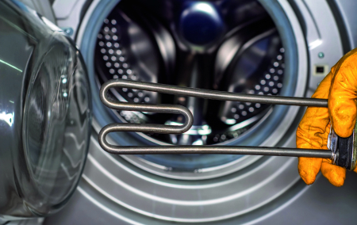

Время работы: Пн-Вс, 9:00 – 21:00
Москва


4 способа повышения качества
воды от «Русептик инжиниринг»
воды от «Русептик инжиниринг»
Предлагаем готовые решения для фильтрации воды или разработаем персональную систему под ваши условия и потребности. Для правильного подбора оборудования и эффективной очистки воды в частном доме необходимо сделать анализ.

Обезжелезивание
Вода с избытком железа имеет металлический вкус и неприятный запах. На открытом воздухе приобретает ржавый оттенок. После фильтрации остается допустимое содержание — 0,3 мг на литр.
Комплектация
- Фильтр грязевой
- Колонна 10х54
- Управляющий клапан
- Фильтрующая загрузка
- Дренаж
- Фильтр угольный «20»
- Расходный материал
от 46 000 ₽
Бесплатный анализ воды!
Умягчение
Жесткая вода имеет горьковатый привкус. На посуде, сантехнике, нагревательных элементах бытовых приборов появляется белый налет. Одежда после стирки становится жесткой. Удаление излишних солей и минералов смягчает воду.
Комплектация
- Фильтр грязевой
- Колонна 10х54
- Управляющий клапан
- Фильтрующая загрузка
- Дренаж
- Солевой бак
- Соль
- Фильтр угольный «20»
- Расходный материал
от 55 500 ₽
Бесплатный анализ воды!
Обезжелезивание + Умягчение
Устанавливаются 2 фильтра для очистки воды от избытка железа и солей жесткости. Вода становится чистой и прозрачной, без запаха и с приятным вкусом.
Комплектация
- Фильтр грязевой
- Колонна 10х54 (2 шт.)
- Управляющий клапан (2 шт.)
- Фильтрующая загрузка
- Дренаж
- Солевой бак
- Соль
- Фильтр угольный «20»
- Расходный материал
от 91 000 ₽
Бесплатный анализ воды!
Комплекс
Несколько этапов водоочистки, где удаляются механические частицы и примеси, уменьшается жесткость, задерживаются вирусы и микроорганизмы. Это максимальная степень очистки воды.
Комплектация
- Фильтр грязевой
- Аэрационная колонна с оголовком
- Компрессор
- Колонна 10х54 (2 шт.)
- Управляющий клапан (2 шт.)
- Фильтрующая загрузка
- Дренаж
- Солевой бак
- Соль
- Фильтр угольный «20»
- Расходный материал
от 91 000 ₽
Бесплатный анализ воды!
Очистка воды в частном доме для сохранения
здоровья и работоспособности бытовой техники
здоровья и работоспособности бытовой техники
Безопасность
Вода, очищенная от вредных примесей, вирусов и бактерий, пригодна для питья.
Вкусовые качества
Вода становится чистой, прозрачной, мягкой, приобретает естественный запах и приятный вкус

Защита бытовой техники
Очистка от солей кальция снижает образование накипи на нагревательных элементах, что продлевает срок службы


{kind=link}
4 ключевых фактора для выбора
системы водоочистки
системы водоочистки

Источник водоснабжения
Колодец, скважина или центральный водопровод.
Тип загрязнений
Для определения состава выполняется анализ воды.
Назначение
Использование воды — бытовое или техническое.
Объем потребления
Учитывается общий расход воды для разных нужд.
Этапы установки водоочистки для дома
от «Русептик инжиниринг»
от «Русептик инжиниринг»
Анализ воды
Вы заказываете анализ воды и передаете результаты нам.
Подбор оборудования
По результатам анализа выберем оптимальное решение для очистки воды.
Установка системы
Проведем монтаж системы водоочистки и подключим к водоснабжению.
Пусконаладочные работы
Проверим работоспособность и убедимся в эффективности оборудования.
Техобслуживание
Выполняем профилактические работы для продления службы системы водоочистки.
Отвечаем на ваши вопросы:
выбор котлов, что выгоднее, гарантии
выбор котлов, что выгоднее, гарантии
Влияет ли повышенное содержание железа в воде на здоровье, например, содержание железа 0,9 при допустимых 0,3?
Слив очищенной септиком воды в реку возможен, но с соблюдением определённых условий. Если участок расположен в водоохранной зоне (рядом с рекой, озером, ручьём или другим природным водоёмом), то сброс очищенных стоков в водоём разрешён только после получения официального разрешения государственных органов (Роспотребнадзор, природоохранная инспекция и другие контролирующие организации).
Попадают ли в воду частицы угля при использовании фильтра «кувшин»? Как они ведут себя при нагревании, кипячении? Не вредно ли это для здоровья?
Слив очищенной септиком воды в реку возможен, но с соблюдением определённых условий. Если участок расположен в водоохранной зоне (рядом с рекой, озером, ручьём или другим природным водоёмом), то сброс очищенных стоков в водоём разрешён только после получения официального разрешения государственных органов (Роспотребнадзор, природоохранная инспекция и другие контролирующие организации).
Можно ли принимать кварцевую и шунгитовую воду во время беременности. В каком количестве, и как чередовать?
Слив очищенной септиком воды в реку возможен, но с соблюдением определённых условий. Если участок расположен в водоохранной зоне (рядом с рекой, озером, ручьём или другим природным водоёмом), то сброс очищенных стоков в водоём разрешён только после получения официального разрешения государственных органов (Роспотребнадзор, природоохранная инспекция и другие контролирующие организации).
Почему в первые дни использования фильтра на дне кувшина образуется зеленый осадок? Может это реакция на примеси, содержащиеся в водопроводной воде? Можно ли использовать такую воду, не вредно ли это для здоровья?
Слив очищенной септиком воды в реку возможен, но с соблюдением определённых условий. Если участок расположен в водоохранной зоне (рядом с рекой, озером, ручьём или другим природным водоёмом), то сброс очищенных стоков в водоём разрешён только после получения официального разрешения государственных органов (Роспотребнадзор, природоохранная инспекция и другие контролирующие организации).
Мне досталась скважина с артезианской водой, которую мы с удовольствием
пьем, глубиной в 160м. Скажите, пожалуйста, возможно ли запатентовать
и продавать эту воду?
Слив очищенной септиком воды в реку возможен, но с соблюдением определённых условий. Если участок расположен в водоохранной зоне (рядом с рекой, озером, ручьём или другим природным водоёмом), то сброс очищенных стоков в водоём разрешён только после получения официального разрешения государственных органов (Роспотребнадзор, природоохранная инспекция и другие контролирующие организации).
Какой фильтр лучше поставить для грубой очистки воды в квартире, и как отличить подделку?
Слив очищенной септиком воды в реку возможен, но с соблюдением определённых условий. Если участок расположен в водоохранной зоне (рядом с рекой, озером, ручьём или другим природным водоёмом), то сброс очищенных стоков в водоём разрешён только после получения официального разрешения государственных органов (Роспотребнадзор, природоохранная инспекция и другие контролирующие организации).
У меня в колодце превышение марганца в 11 раз, должно быть 0,1 а у меня 1,08. Какую систему фильтрации вы мне посоветуйте, и сколько она будет стоить с учетом других фильтров?
Слив очищенной септиком воды в реку возможен, но с соблюдением определённых условий. Если участок расположен в водоохранной зоне (рядом с рекой, озером, ручьём или другим природным водоёмом), то сброс очищенных стоков в водоём разрешён только после получения официального разрешения государственных органов (Роспотребнадзор, природоохранная инспекция и другие контролирующие организации).
Как выбрать систему очистки воды
и другие полезные статьи
и другие полезные статьи